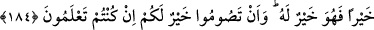
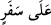

184. Sayılı günlerde olmak üzere (oruç size farz kılındı). Sizden her kim hasta
yahut yolcu olursa (tutamadığı günler kadar) diğer günlerde kazâ eder. (İhtiyarlık
veya şifâ umudu kalmamış hastalık gibi devamlı mazereti olup da) oruç tutmaya
güçleri yetmeyenlere bir fakir doyumu kadar fidye gerekir. Bununla beraber kim
gönüllü olarak hayır yaparsa, bu kendisi için daha iyidir. Eğer bilirseniz (güçlüğüne
rağmen) oruç tutmanız sizin için daha hayırlıdır.
“Eyyâm-ı mâdûdât”, vakti ve sayısı belli günler demektir. Oruç tutmanın farz olduğu
günlerin, azlığını belirtmek içindir. Çünkü az mal, teker teker sayılabilir. Fakat çok mal
saymaksızın ve ölçmeksizin bol bol dökülür, boşaltılır. İşte Allah Teâlâ bizlere olan
rahmeti sebebiyle her gün veya çoğu gün oruç tutmayı farz kılmamış, bunu hafifleterek
ve kolaylaştırarak sadece sayılı birkaç güne mahsûs kılmıştır.
Orucun zarar vereceği şekilde hasta olan veya seferde bulunan kimse o günlerde oruç
tutmayabilir, ancak tutamadığı günleri, ramazan ayı dışında, hasta ve yolcu olmadığı
diğer günlerde kazâ eder.
(
) “Alâ sefer” ifâdesinin mânâsı, “râkib-i sefer” yâni “sefere binen”;
yolculuğa çıkan demektir. Bu mânâda, gündüz oruçlu iken yolculuğa çıkan kimsenin
orucunu bozmaması gerektiğine işâret vardır. İftâr etme ruhsatı ise, sadece sefer üzere
olanlara verilmiştir.
“İddeh”, mâdûd; yâni sayılan demektir. Meselâ, insanlardan oluşan sayılı bir
topluluğa “iddeh” denilir. Ramazan ayı içerisinde hasta veya yolcu olup oruç tutmayan
kimse tutamadığı bu günler adedince diğer günlerde oruç tutar. Ramazan ayında oruç
tutulamayan günlerin kazâ edilişi sırasında peşpeşe veya ayrı olması arasında fark
yoktur. Kişi istediği gibi bunları kazâ eder.
Âyetten maksad, sayılı günlerde oruç tutmanın, sadece sıhhati yerinde olanlara ve
yolcu olmayanlara farz olduğunu açıklamaktır. Hasta veya yolcu olan kimseler ise
orucu, bu belirli günlerde tutamayıp diğer belirsiz günlere tehir ederler.
Müfessirlerin çoğunluğu, “güç yetirebilenler” ifâdesinden kastedilenlerin sıhhatli ve
mukîm kimseler olduğu görüşündedir. Allah Teâlâ onları, İslâm’ın başlangıcında,
kendilerine zorluk çıkarmamak için oruç tutmak ile oruç tutmayıp fidye vermek arasında
serbest bıraktı. Çünkü onlar, henüz oruç tutmayı kendilerine âdet edinmemişlerdi.
Sonra, “Sizden her kim hilâli (Ramazan ayının ilk hilâlini) görürse oruca
başlasın.” (el-Bakara, 2/185) âyeti ile bu muhayyerliği neshedip, azîmetle amel etmeyi
emretmiştir.
Buna göre âyetin mânâsı: Oruç tutmaya güç yetiren kimselerin, eğer oruç tutmazlarsa,
tutamadıkları her gün için bir fidye vermeleri gerekir. Fidye, bir fakiri doyurma